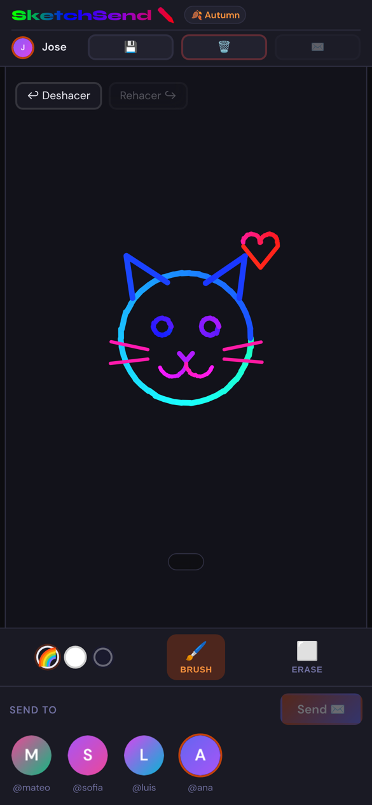
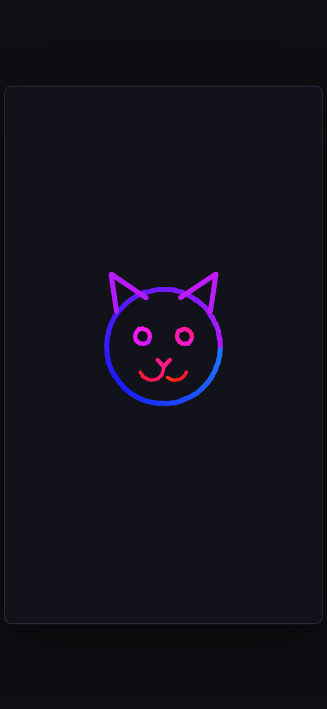

Every message is made by hand, stroke by stroke. Say the things words get wrong.

Your friend doesn't get a flat picture. The drawing replays in front of them, line by line, exactly the way you made it.

Go ahead, draw something!
Shared by our artists